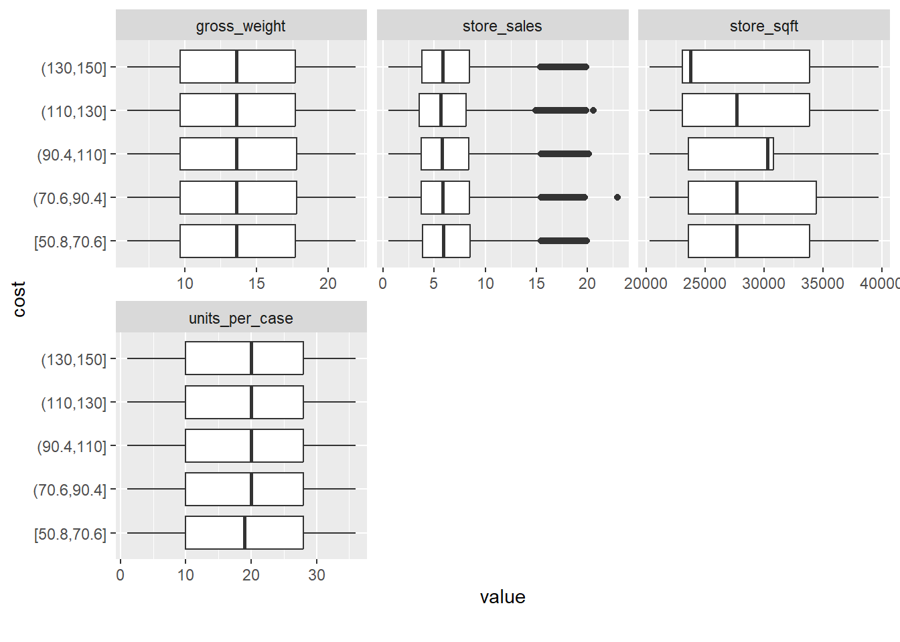

library(data.table)
library(tidyverse)
library(magrittr)
library(here) # avoid having to change between . and .. when running interactively vs knitting
library(DataExplorer)
library(tidymodels)
library(vip)
library(gridExtra)EDA
Setup
load(here("Output/01_output.RData"))Use only training data for the EDA
df_train_split <- training(output_01$data_split)summary(df_train_split) id store_sales unit_sales total_children
Min. : 0 Min. : 0.510 1: 5405 0:29079
1st Qu.: 89971 1st Qu.: 3.720 2: 61770 1:59879
Median :180113 Median : 5.760 3:140521 2:59045
Mean :180042 Mean : 6.337 4: 76005 3:57378
3rd Qu.:270009 3rd Qu.: 8.400 5: 4545 4:56082
Max. :360335 Max. :22.920 6: 21 5:26804
num_children_at_home avg_cars_at.home gross_weight recyclable_package
0:194805 0:14686 Min. : 6.00 Min. :0.0000
1: 39519 1:66077 1st Qu.: 9.71 1st Qu.:0.0000
2: 22560 2:88325 Median :13.60 Median :1.0000
3: 16280 3:83500 Mean :13.83 Mean :0.5685
4: 10037 4:35679 3rd Qu.:17.70 3rd Qu.:1.0000
5: 5066 Max. :21.90 Max. :1.0000
low_fat units_per_case store_sqft coffee_bar
Min. :0.0000 Min. : 1.00 Min. :20319 Min. :0.0000
1st Qu.:0.0000 1st Qu.:10.00 1st Qu.:23593 1st Qu.:0.0000
Median :0.0000 Median :20.00 Median :27694 Median :1.0000
Mean :0.3276 Mean :18.97 Mean :28179 Mean :0.5648
3rd Qu.:1.0000 3rd Qu.:28.00 3rd Qu.:33858 3rd Qu.:1.0000
Max. :1.0000 Max. :36.00 Max. :39696 Max. :1.0000
video_store salad_bar prepared_food florist
Min. :0.0000 Min. :0.000 Min. :0.000 Min. :0.0000
1st Qu.:0.0000 1st Qu.:0.000 1st Qu.:0.000 1st Qu.:0.0000
Median :0.0000 Median :1.000 Median :1.000 Median :1.0000
Mean :0.2774 Mean :0.505 Mean :0.505 Mean :0.5038
3rd Qu.:1.0000 3rd Qu.:1.000 3rd Qu.:1.000 3rd Qu.:1.0000
Max. :1.0000 Max. :1.000 Max. :1.000 Max. :1.0000
cost
Min. : 50.79
1st Qu.: 70.32
Median : 98.81
Mean : 99.61
3rd Qu.:126.62
Max. :149.75 A very straight forward data set. Fortunately, no missing values.
Marginal Distributions
df_train_split %>%
select(!id) %>%
plot_histogram(ncol = 3)df_train_split %>%
select(!id) %>%
mutate(
num_children_diff =
(as.integer(total_children) - as.integer(num_children_at_home)) %>%
as_factor %>%
as.ordered
) %>%
plot_bar()
Take aways:
- There are no factor variables which are not ordinal
- Data scarcity: num_children_at_home (>= 2) and unit_sales in millions (inlcude 1 in 2 (<= 2) as well as 5 and in 4 (>= 4)) needs grouping. All the binary variables have adequate data in both levels.
- Non of the continous distributions has a very skewed distribution, so transformations are probably not needed.
Distributions by target
df_train_split %>%
select(!id) %>%
plot_boxplot(
"cost",
ncol = 3
)
vars_factor <-
c("unit_sales",
"total_children",
"num_children_at_home",
"avg_cars_at.home")
walk(
vars_factor,
~ df_train_split %>%
select(cost, where(is.factor)) %>%
plot_boxplot(
by = .x
)
) vars_binary <-
c("recyclable_package",
"low_fat",
"coffee_bar",
"video_store",
"salad_bar",
"prepared_food",
"florist")
vars_binary_plot <-
map(
vars_binary,
~ df_train_split %>%
ggplot(aes(x = cost, fill = as.factor(!!sym(.x)))) +
geom_density(alpha = 0.1) +
theme(legend.position = "bottom")
) ggpubr::ggarrange(
plotlist = vars_binary_plot,
ncol = 2
)$`1`
$`2`
$`3`
$`4`
attr(,"class")
[1] "list" "ggarrange"Take aways:
- There are quite a few variables which do not seem to have a relationship with cost, at least not marginally. For a few of them, specific levels do seem to correlate with cost.
- Using box plots are probably not the best strategy for ordinal factors, but whatever
- Salad bar and prepared food looks identical
Validating data
Is total_children >= num_children_at_home for all observations?
df_train_split %>%
mutate(
children_diff = as.integer(total_children) - as.integer(num_children_at_home)
) %>%
filter(
children_diff < 0
) id store_sales unit_sales total_children num_children_at_home
1: 344387 1.77 3 3 4
2: 110039 5.55 3 2 3
3: 288639 4.92 3 2 3
4: 37900 11.94 3 3 4
avg_cars_at.home gross_weight recyclable_package low_fat units_per_case
1: 3 17.3 0 1 23
2: 3 21.8 1 0 6
3: 2 16.7 1 0 31
4: 3 10.0 1 0 12
store_sqft coffee_bar video_store salad_bar prepared_food florist cost
1: 27694 1 1 1 1 1 82.62
2: 30797 1 1 1 1 1 99.38
3: 23598 0 0 0 0 1 101.84
4: 34791 0 0 1 1 0 137.55
children_diff
1: -1
2: -1
3: -1
4: -1There are so few, it probably does not make a difference.
Correlation
df_train_split %>%
select(!id) %>%
plot_correlation(type = "continuous")df_train_split %>%
select(!id) %>%
plot_correlation(type = "discrete")Correlation is not a big problem when we are only concerned with prediction and not inference. Otherwise, some VIF analysis would be in order it seems.
Variable importance
Only main effects
# -- Include "brute force" interaction terms
rerun_main <- FALSE
if (rerun_main) {
rf_fit_main <-
rand_forest() %>%
set_mode("regression") %>%
set_engine(
"ranger",
importance = "impurity"
) %>%
fit(
formula = cost ~ .,
data = df_train_split %>% select(!id)
)
rf_var_imp_main <-
rf_fit_main %>%
vi()
save( # caching does not really work for som reason
rf_var_imp_main,
file = here("Output/02_featImp_main.RData")
)
}load(here("Output/02_featImp_main.RData"))
rf_var_imp_main %>%
vip(num_features = 15)With interaction features
# -- Include "brute force" interaction terms
rerun_int <- FALSE
if (rerun_int) {
rf_rec_int <-
recipe(
formula = cost ~ .,
data = df_train_split %>% select(!id)
) %>%
step_interact(
terms = ~ all_numeric_predictors():all_nominal_predictors()
)
rf_spec_int <-
rand_forest() %>%
set_mode("regression") %>%
set_engine(
"ranger",
importance = "impurity"
)
rf_wflow_int <-
workflow() %>%
add_recipe(rf_rec_int) %>%
add_model(rf_spec_int)
rf_fit_int <-
rf_wflow_int %>%
fit(df_train_split %>% select(!id))
rf_var_imp <-
rf_fit_int %>%
extract_fit_parsnip() %>%
vi()
save(
rf_var_imp,
file = here("Output/02_featImp_int.RData")
)
}load(here("Output/02_featImp_int.RData"))
rf_var_imp %>%
vip(num_features = 100)To do
- Acount for data scarcity
- Bin categorical features
- Normalize predictors
- Salad bar and prepared food is the same variable
- Try to include external data as well